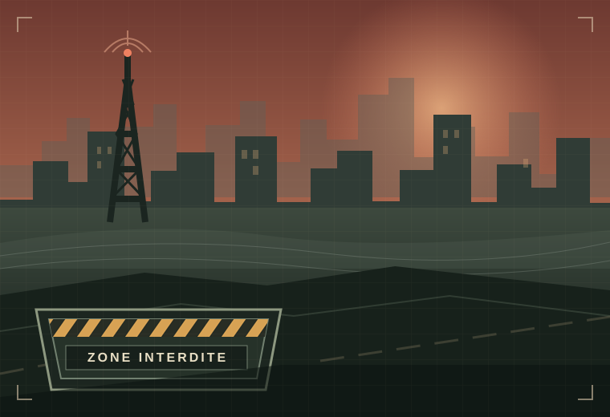

SIGNAL DE SECOURS ACTIF / XM
TRANSMISSION 01 / ZONE DE QUARANTAINE
APRÈS LA CHUTE
Le monde
a changé.
Les villes sont silencieuses. Les infectés approchent. Trouvez une issue avant que la zone ne se referme.
UNE EXPÉRIENCE POINT & CLICK
Observez. Résolvez. Survivez.

48° 51’ N / 02° 20’ E01 / SURVIE02 / ÉNIGMES03 / EXTRACTIONPROJET EN DÉVELOPPEMENT